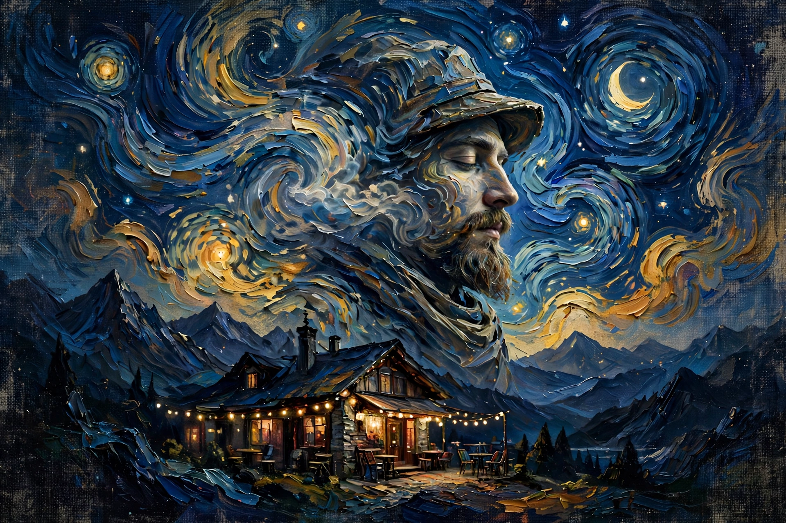

Musafir Cafe (also spelled Musaafir Cafe or Musafir Chai Adda) is a free ambient radio built at musafircafe.in to recreate one very specific memory: the mountainside cafe of 2000s India, with a small speaker in the corner playing Bollywood hits between the hiss of chai, mountain wind, and slow traveller chatter.
A curated playlist of the era's biggest cafe-radio staples.
Rotating one-liners from travellers and chai-wallahs.
Free, streams from browser, never closes.
Same chai, different stories — everything pinned on the wall.